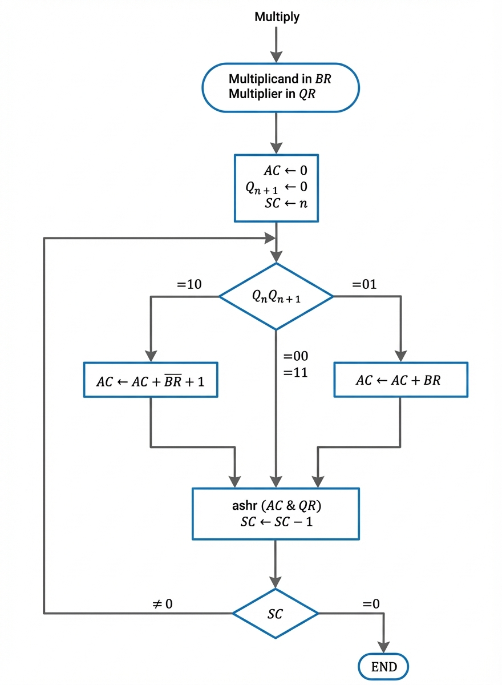

Efficient Binary Multiplication for Signed Numbers
The Booth Multiplication Algorithm is a powerful technique for multiplying binary numbers, particularly efficient for signed binary multiplication. Developed by Andrew Donald Booth in 1950, it reduces the number of additions required in the multiplication process by examining consecutive bits and performing intelligent operations.
Reduces the number of arithmetic operations compared to traditional methods
Works seamlessly with both positive and negative binary numbers
Easily implemented in digital circuits and processors
This example demonstrates the complete multiplication process using Booth's Algorithm:
| Operation | E | A | Q | SC |
|---|---|---|---|---|
| Multiplier in Q | 0 | 00000 | 10011 | 101 |
| Qn = 1; add B | 10111 | |||
| First partial product | 0 | 10111 | ||
| Shift right EAQ | 0 | 01011 | 11001 | 100 |
| Qn = 1; add B | 10111 | |||
| Second partial product | 1 | 00010 | ||
| Shift right EAQ | 0 | 10001 | 01100 | 011 |
| Qn = 0; shift right EAQ | 0 | 01000 | 10110 | 010 |
| Qn = 0; shift right EAQ | 0 | 00100 | 01011 | 001 |
| Qn = 1; add B | 10111 | |||
| Fifth partial product | 0 | 11011 | ||
| Shift right EAQ | 0 | 01101 | 10101 | 000 |
| Final product in AQ = 0110110101 | ||||

Enter binary numbers to see Booth's algorithm in action! (Use 5-bit signed binary numbers)
Reduces the number of additions needed, especially when multiplying numbers with consecutive 1s or 0s
Naturally handles two's complement signed numbers without additional conversion
Simple to implement in digital circuits with standard components
The algorithm exploits the mathematical property that a string of 1s in binary can be represented as a subtraction. For example:
Binary: 0111 = 8 - 1 = 7
This means: 0111 = 1000 - 0001
By recognizing bit patterns (01 and 10 transitions), Booth's algorithm minimizes operations by treating consecutive 1s as a single subtract-add pair rather than multiple additions.